11.1 计算数学
计算数学是关于通过计算来解决数学问题的科学。这里所说的“计算”既包括数值计算， 也包括符号计算；这里所说的“数学问题”可能来自纯数学，更可能是从各个科学和工程领 域抽象出来的。计算数学包括很多分支，其中最核心、应用最广的是数值方法。
数值方法
数值方法（numerical method，也称计算方法、数值分析等）是利用计算机进行数值计 算来解决数学问题的方法，其研究内容包括数值方法的理论、分析、构造及算法等。很多科 学与工程问题都可归结为数学问题，而数值方法对很多基本数学问题建立了数值计算的解决 办法，例如线性代数方程组的求解、多项式插值、微积分和常微分方程的数值解法等等。
数值方法的构造和分析主要借助于数学推导，这是数学思维占主导的部分。例如，一元 二次方程的求根公式实际上给出了方程的数值解法，该公式完全是通过数学推导得出的；而 通过对该公式的分析，可以了解实数根是否存在等情形。如果问题不存在有限的求解代数式， 可以通过数学推导来寻求能得到近似解的代数式，例如将积分转化为求和。
数值方法最终要在计算机上实现，这是计算思维占主导的部分。有人也许会认为，对于 数值计算问题，只要有了求解问题的数学公式，再将这些公式翻译成计算机程序，问题就迎 刃而解，所以数值方法的关键是数学推导，而计算思维在其中并没有什么作用。是不是这样 呢？仍以一元二次方程 ax2+bx+c=0 的求解问题为例。这个问题的求解求根公式是已知的：
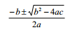
这个公式可以直接了当地翻译成 Python 程序（程序 3.5）：
import math
a, b, c = input("Enter the coefficients (a, b, c): ")
discRoot = math.sqrt(b * b - 4 * a * c)
root1 = (-b + discRoot) / (2 * a)
root2 = (-b - discRoot) / (2 * a)
print "The solutions are:", root1, root2
下面是此程序的一次执行结果：
Enter the coefficients (a, b, c): 1,-(9+10**18),9*10**18
The solutions are: 1e+18 0.0
可见，计算机求解方程 x**2 -(9+10**18)x + 9x10**18 = 0 所给出的根是 10**18 和 0，而非正确的 10**18 和 9。对于这个结果，传统的数学是无法解释的，只有明白了计算机的能力和限制，才能给出解释。计算思维在计算方法中的意义，由此可见一斑。 利用数值方法解决科学与工程问题大体要经过三个步骤。第一步是为问题建立数学模型，即用合适的数学工具（如方程、函数、微积分式等）来表示问题；第二步是为所建立的 数学模型选择合适的数值计算方法；第三步是设计算法并编程实现，这里要着重考虑计算精 度和计算量等因素，以使计算机能够高效、准确地求解问题。在计算机上执行程序得到计算 结果后，若结果不理想，多半是因为所选数值方法不合适，当然也可能是数学模型不合适。 在模型正确、编程正确的前提下，计算结果完全取决于数值方法的选择。
本节只简单介绍计算机的能力和限制是如何影响计算方法的选择的。
误差
正如前述一元二次方程求解例子所显示的，一个正确的数学公式在计算机上却得不到正 确的、精确的结果，这种现象主要是由误差引起的。科学与工程计算中的误差有多种来源， 其中建立数学模型和原始数据观测两方面的误差与计算方法没有关系，与计算方法有关的是 截断误差和舍入误差。
截断误差是在以有限代替无限的过程中产生的，例如计算 ex 的泰勒展开式
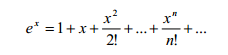
时只能选取前面有限的 n 项，得到的是 ex 的近似值，前 n 项之后的部分就是截断误差。 舍入误差是因计算机内部数的表示的限制而导致的误差。在计算机中能够表示的数与数
学中的数其实是不一样的：计算机只能表示有限的、离散的数，而数学中的数是无限的、连 续的。以有限表示无限，以离散表示连续，难免造成误差。例如 Python 中有如下出人意料 的数值计算结果：
>>> 1.2 - 1
0.19999999999999996
由于浮点数内部表示的限制，1.2 - 1 的结果并非精确的 0.2。又如，积分计算问题

是连续系统问题，由于计算机不能直接处理连续量，因此需要将连续的问题转化为离散的问 题来求解。一般常用离散的求和过程来近似求解积分①。
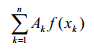
舍入误差的控制
计算机内部对数的表示构成一个离散的、有限的数集，而且这个数集对加减乘除四则运算是不封闭的，即两个数进行运算后结果会超出计算机数集的范围。这时只好用最接近的数 来表示，这就带来了舍入误差。因此，应当控制四则运算的过程，尽量减小误差的影响。
在加减法运算中，存在所谓“大数吃小数”的现象，即数量级相差较大的两个数相加减 时，较小数的有效数字会失去，导致结果中好像没做加减一样。例如
>>> 10**18 + 9.0
1e+18
① 据说积分号就是从 S（sum）演变而来的符号。
由此可知，当有多个浮点数相加减时，应当尽量使大小相近的数进行运算，以避免大数 “吃”小数。例如，设 x1 = 0.5055×104，x2 = x3 = ... = x11 = 0.4500（假设计算机只能支持 4 位有效数字），要计算诸 xi 的总和。一种算法是将 x1 逐步与 x2 等相加，这样每次加法都是大 数加小数，按计算机浮点计算的规则：x1 + x2 ＝ 0.5055×104 + 0.000045×104 ＝ 0.505545×104＝0.5055×104，即产生了舍入误差 0.45。如此执行 10 次加法之后，结果仍然是 0.5055×104，误差积累至 10×0.45 ＝ 4.5。另一种算法是让相近数进行运算，如 x11 + x10 = 0.9000， 在一直加到 x1，执行 10 次加法之后得到总和 0.5060×104，没有舍入误差。这个例子再次显 示了“次序”在计算中的重要意义：数学上毫无差别的两种次序在计算机中却带来截然不同 的结果，就像我们在第 3 章中计算 231-1 时采用 230-1+230 这个次序一样。
当两个相近的数相减时，会引起有效数字的位数大大减少，误差增大。为了避免这种结 果，通常可以改变计算方法，将算式转化成等价的另一个计算公式。例如：
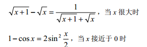
在除法运算中，应当避免除数接近于零，或者除数的绝对值远远小于被除数的绝对值的
情形，因为这两种情形都会使舍入误差增大，甚至使结果溢出。解决办法仍然是转化为等价 算式。例如：
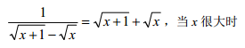
这里，不同计算公式的选择就如同上述不同计算次序的选择，虽然在数学上结果是一样 的，但在计算机中却存在很大差别。
计算量
站在计算机的角度，对数值方法主要关注的是算法的效率和精度。算法的效率由算法复 杂度决定，数值方法中通常用浮点乘除运算（flop）的次数来度量算法效率，称为算法的计 算量。计算量越小，效率就越高。
当一个算法的计算量很大，并不意味着它能提高计算结果的准确度，相反倒有可能使舍 入误差积累得更多，可谓费力不讨好。利用数学推导来简化计算公式，或者利用计算机的运 算及存贮能力来巧妙安排计算步骤，都可以减少计算量，使计算更快、更准确。
例如，设 A、B、C 分别是 10×20、20×50、50×1 的矩阵，我们来考虑如何计算 ABC。 一种算法是先算 AB，再乘 C，计算量为 10500flops；另一种算法是先算 BC，再用 A 乘， 计算量为 1200flops。显然后一种算法大大优于前一算法，再次显示了“次序”的妙处。
又如，考虑如何计算 x64。一种算法是将 64 个 x 逐步相乘，计算量为 63flops；另一算 法利用
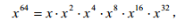
其中 x**2k（k＝2，4，8，16）的计算都可以利用前一步算出的结果，即
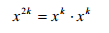
这样计算量可以降至 10flops。 有些数值算法甚至会使计算量大到失去实际意义的地步，就如 Hanoi 塔问题的算法对较
大问题规模不可行一样。例如求解 n 元线性方程组的克莱默法则对于较大 n 就是不可行的方 法，因为其计算量是(n+1)(n-1)(n!)+n；而高斯消去法的计算量仅为 n3/3+n2-n/3，是非常高 效的算法。
病态与良态问题
有些问题的解对初始数据非常敏感，数据的微小变化会导致计算结果的剧烈变化，这种
问题称为病态问题，反之称为良态问题。例如多项式 p(x) = x2+x-1150 在 100/3 和 33 处的值 分别为-5.6 和-28，数据变化只有 1%，而结果变化了 400%。又如下面这个方程组
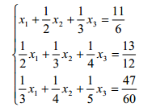
的解是 x1 ＝ x2 ＝ x3 ＝1，当将各个系数舍入成两位有效数字，与原来的系数虽然差别不 大，但方程组的解却变成了 x1 ≈ -6.22，x2 ＝38.25，x3 ＝ -33.65。
相反，下面这个方程组
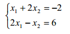 的解为 x1 =2，x2 = -2。若对其常数项-2 做微小扰动改为-2.005，则解变成 1.999 和-2.002， 与原来的解差别很小。可见这个问题是良态的。
数值方法主要研究良态问题的数值解法。由于实际问题的数据往往是近似值，或者是经 过舍入处理的，这相当于对原始数据的扰动，如果求解的是病态问题，则会导致很隐蔽的错 误结果。病态问题在函数计算、方程求根、方程组求解中都存在，它的计算或求解应当使用 专门的方法，或者转化为良态问题来解决。
数值稳定性
求解一个问题的数值方法往往涉及大量运算，每一步运算一般都会产生舍入误差，前面 运算的误差也可能影响后面的运算。一个数值方法如果在计算过程中能将舍入误差控制在一 定范围内，就称为数值稳定的，否则称为数值不稳定的。例如，考虑下面这个积分的计算：
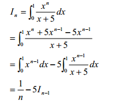
根据上面这个递推式，可得出迭代算法：
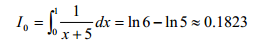
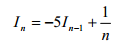
这个算法是不稳定的，因为 I0 的舍入误差会随着迭代过程不断传播、放大。编程计算一下
可见，结果中甚至出现了负数，而根据原积分式可知 In 应该总是大于 0。
>>> def f():
x = 0.1823
print "I0 =",x
for n in range(1,101):
x = -5 * x + 1.0 / n
print "I"+str(n)+" =",x
>>> f()
I0 = 0.1823
I1 = 0.0885
I2 = 0.0575
I3 = 0.0458333333333
...
I97 = 1.36042495942e+63
I98 = -6.80212479709e+63
I99 = 3.40106239854e+64
I100 = -1.70053119927e+65
现在利用下列关系式
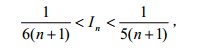
先对足够大的 n 取 In 的估计值，然后再计算 In-1、In-2、…、I1。迭代算法如下：
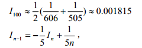
这个算法可使误差逐渐减小，因此是数值稳定的，下面程序的运行结果验证了这一点。此例又一次显示了次序的重要性。
>>> def g():
x = 0.001815
print "I100 =",x
for n in range(100,0,-1):
x = -x/5 + 1.0/(5*n)
print "I"+str(n-1)+" =",x
>>> g()
I100 = 0.001815
I99 = 0.001637
I98 = 0.0016928020202
I97 = 0.00170225592249
...
I3 = 0.043138734089
I2 = 0.0580389198489
I1 = 0.0883922160302
I0 = 0.182321556794
综上所述，数值方法以利用计算机进行数值计算的方式来解决科学和工程中抽象出来的 数学问题。与纯数学方法不同，数值计算方法的构造和算法实现必须考虑计算机的能力和限 制，亦即计算思维的原则对计算方法具有重要影响。